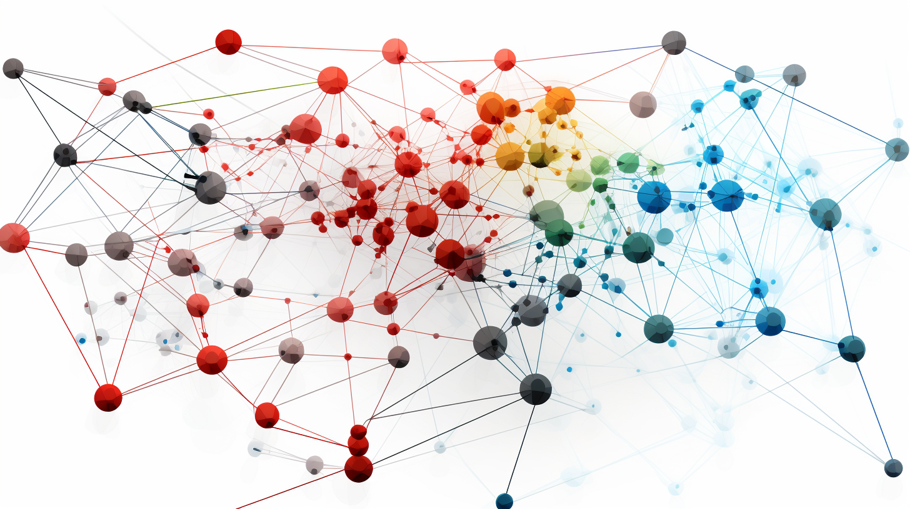

Frequently Asked Questions
What is Digitalage?
Digitalage is an ethical social media platform focused on user control, content integrity, fair compensation for creators, and building authentic communities. We leverage advanced technologies like blockchain and AI responsibly.
How is Digitalage different from other social media apps?
Unlike traditional platforms, Digitalage puts user needs first - not advertisers. You retain data ownership. Creators earn equitable income. Misinformation is reduced through content authentication. And real connections are made without algorithmic manipulation.
Why should I switch from the social apps I already use?
On Digitalage you escape tracking, targeting and viral outrage while gaining control over your personal data. Creators can earn more without pressure for superficial engagement. And everyone benefits from a transparent platform focused on user well-being over profits.
How do you ensure creators get paid fairly?
Digitalage utilizes blockchain-enabled smart contracts to facilitate transparent subscriber payments, platform fee structures, and viewer-supported monetization - with creators keeping up to 95% of earnings.
How does Digitalage manage privacy and security?
Our decentralized infrastructure keeps data ownership in users' hands. Advanced encryption secures personal data and communications. And strict access controls prevent External tracking, limiting data collection to core platform improvements.
Ready to learn more? Explore our platform and join Digitalage today!
